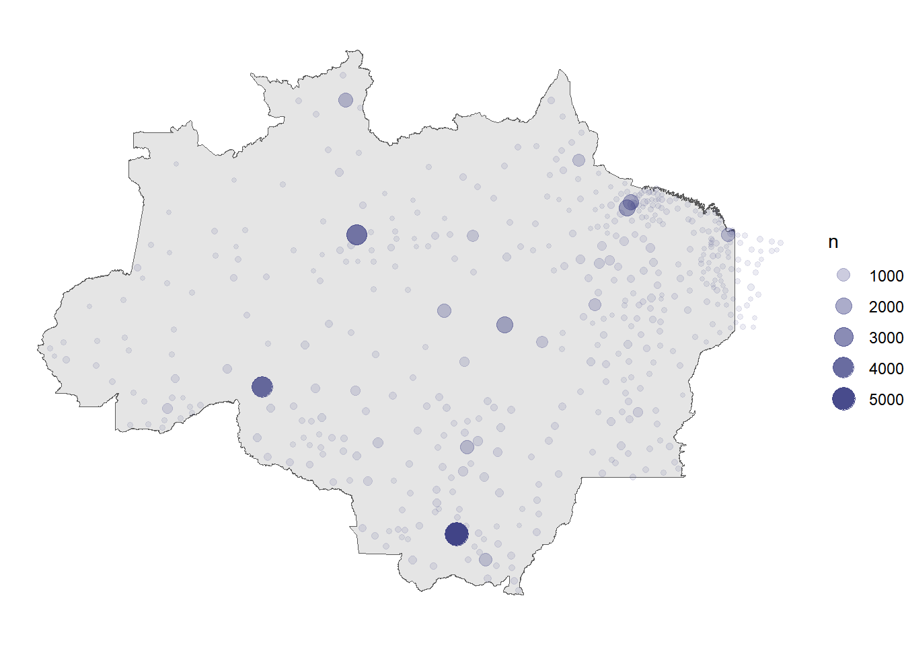
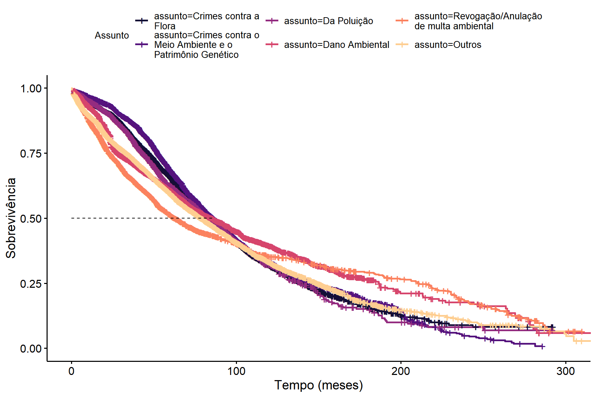
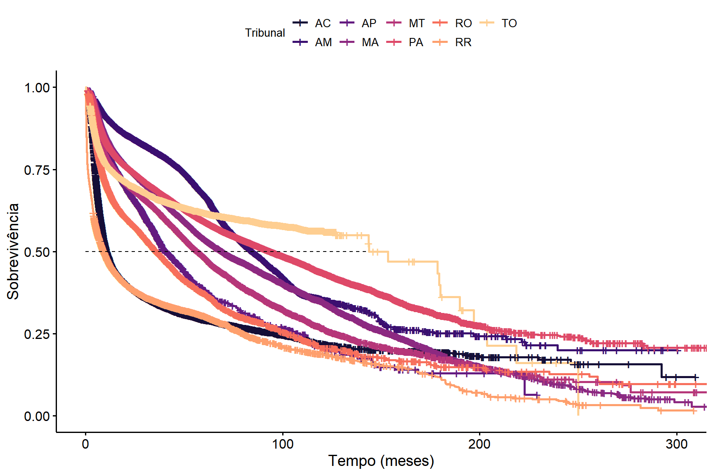
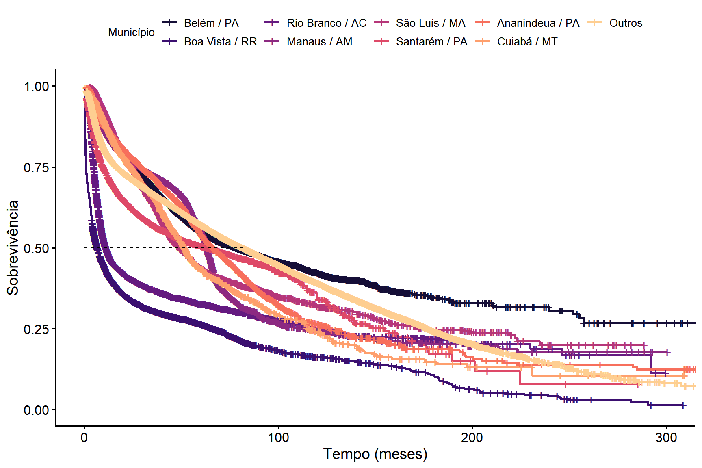

| Questão | Respondida | Bases de dados utilizadas | Limitação | Base de dados necessária |
|---|---|---|---|---|
| 1 | Parcialmente | sirenejud, datajud, TRF1 | As atividades só podem ser investigadas através dos assuntos processuais disponíveis. | Amostra (ou a totalidade) de petições iniciais de processos envolvendo lavagem de bens e capitais no recorte regional da pesquisa, verificando quais casos envolvem crimes ambientais ou não. Em seguida, levantar, nos casos identificados, as principais atividades envolvidas. |
| 2 | Parcialmente | sirenejud | Não é possível filtrar os casos envolvendo lavagem de bens e capitais em crimes ambientais na base do Sirenejud. A base do Datajud disponibilizada não contém informação das partes. A base do TRF1 apresenta informações incompletas de partes e poucos casos dentro do escopo. | A partir do filtro realizado para responder à Questão 1, obter as partes relacionadas. Ou seja, ao responder à Questão 1, seria possível responder à Questão 2 somente com os dados do Datajud. |
| 3 | Não | - | Análise jurídica, não quantitativa | - |
| 4 | Não | - | Análise jurídica, não quantitativa | - |
| 5 | Parcialmente | Igual à questão 1 | Igual à Questão 1 | Igual à Questão 1 |
| 6 | Não | - | As bases do Datajud e do Sirenejud não têm informações das sentenças. Na base do TRF1 as sentenças estão disponíveis, mas era inviável extrair as decisões, fundamentos jurídicos e razão de decidir de forma automática. | Seria necessário realizar um estudo com classificação manual das peças a partir de amostragem, ou então um estudo de classificação utilizando técnicas de mineração de texto ou ferramentas de inteligência artificial, que estavam fora do escopo da pesquisa |
| 7 | Não | - | Análise jurídica, não quantitativa | - |
| 8 | Parcialmente | Igual à questão 2 | Igual à Questão 2 | Igual à Questão 2 |
| 9 | Não | NA | Igual à Questão 6 | Igual à Questão 6, adicionando-se a dificuldade de informações adicionais como desconsideração da personalidade jurídica não são, necessariamente, mencionadas nas decisões. Seria, portanto, necessário analisar as movimentações processuais e outras peças dos processos para obter todas as informações desejadas. |
| 10 | Não | - | Análise jurídica, não quantitativa | - |
| 11 | Não | - | Análise jurídica, não quantitativa | - |
| 12 | Parcialmente | sirenejud, datajud, sinesp | A base do SINESP mostra apenas informações sobre crimes contra a vida, não ameaça. Além disso, não é possível filtrar os casos envolvendo lavagen de bens e capitais em crimes ambientais nas bases do Sirenejud e Datajud. | Além do filtro realizado para responder à Questão 1 |
| 13 | Não | - | Não é possível filtrar os casos envolvendo conflitos fundiários com crimes ambientais ou crimes contra a vida com os dados disponíveis. | Seria necessário que esse assunto estivesse disponível nas Tabelas Processuais Unificadas (TPU). Além disso, os casos envolvendo crimes fundiários devem ser marcados com os assuntos de crime ambiental ou crime contra a vida, quando este for o caso. |
| 14 | Sim | sirenejud | A Questão 14 envolve apenas a análise do tempo médio de duração de ações criminais que envolvem a temática ambiental, sem o recorte de processos envolvendo lavagem de bens e capitais. Portanto, a análise realizada responde à pergunta de forma integral. | - |
| 15 | Não | - | Não é possível filtrar os casos envolvendo crimes contra a vida ou ameaça contra pessoas ligadas à defesa do meio ambiente ou de movimentos relacionados à proteção de populações indígenas e/ou povos tradicionais com os dados disponíveis. | Seria necessário que esse assunto estivesse disponível nas Tabelas Processuais Unificadas (TPU). |
| 16 | Não | - | Igual à Questão 13 | Igual à Questão 13 |
Análise descritiva
Introdução
O estudo completo tem como objetivo identificar e analisar as cadeias de lavagem de bens e capitais relacionadas a crimes ambientais. A pesquisa é baseada na sistematização de informações sobre os atores e processos judiciais envolvidos, examinados sob a perspectiva dos crimes ambientais e da atuação jurisdicional no assunto. Ao combinar os temas de crimes ambientais e lavagem de bens e capitais, será possível estudar as sanções previstas nas leis de combate à lavagem de dinheiro, que frequentemente são mais efetivas do que as sanções previstas nas leis de crimes ambientais. Além disso, serão geradas recomendações sobre o assunto.
A pesquisa será desenvolvida a partir de 16 perguntas norteadoras, listadas abaixo.
- Quais são as atividades que conectam e alimentam a cadeia de fluxos de capitais que promovem o desmatamento?
- Quem são os atores envolvidos nos casos de lavagem de dinheiro e corrupção relacionados a crimes ambientais?
- Quais são os desafios na diferenciação entre atividades legais e ilegais para fins de identificação de fluxos de lavagem de capitais?
- Quais as teses jurídicas de defesa mais utilizadas nas ações envolvendo lavagem de dinheiro, fluxos de capitais para atividades ambientais ilegais e lavagem de dinheiro?
- Existem padrões identificáveis nos casos judicializados quanto às circunstâncias, características dos autores, modalidades e tipos de crimes ambientais?
- Quais são as decisões tomadas e seus fundamentos jurídicos de fato e a razão de decidir apresentadas nesses casos?
- Qual o papel do Poder Judiciário no combate à lavagem de dinheiro e corrupção relacionados a crimes ambientais?
- Quais os principais segmentos econômicos ou grupos empresariais que estão envolvidos na cadeia de produção que tenha alguma relação com crime ambiental (indústria de equipamentos pesados, maquinário agrícola, maquinário de mineração, táxi aéreo, bancos e instituições financeiras de fomento agrícola, leasing)?
- Como especificar, em caso de crimes ambientais complexos e de grande monta, os mandantes indiretos? Há pessoas jurídicas envolvidas? Há desconsideração de pessoa jurídica nesses casos?
- Há normas de ESG (environmental, social, and Governance) que podem reduzir a lavagem de capitais e o fluxo de capitais para atividades ambientais ilegais?
- Há atos normativos ou diretrizes no âmbito da Estratégia Nacional de Combate à Corrupção e à Lavagem de Dinheiro - ENCCLA, do Banco Central do Brasil e/ou do Conselho de Controle de Atividades Financeiras - COAF que podem facilitar a identificação de fluxo de capitais em matéria ambiental?
- Há correlação entre a incidência de crimes contra a vida ou ameaça em regiões de alta ocorrência de desmatamento, ou mineração ilegal ou crimes ambientais em geral?
- Há relação entre a ocorrência da alta incidência de demandas judiciais de conflitos fundiários com crimes ambientais ou crimes contra a vida?
- Qual o tempo de duração médio das ações criminais que envolvam a temática ambiental?
- Qual a quantidade de ações criminais que apuram crimes contra a vida ou de ameaça contra pessoas ligadas à defesa do meio ambiente ou de movimentos relacionados à proteção de populações indígenas e/ou povos tradicionais que ingressam por ano? Qual o tempo de duração médio dessas ações? Quais as espécies de crime cometidas? Qual a efetividade da identificação da autoria e do cumprimento da pena?
- Qual a quantidade de ações criminais que apuram crimes relacionados à questão fundiária que ingressam por ano? Qual o tempo de duração médio dessas ações? Quais as espécies de crime cometidas? Qual a efetividade da identificação da autoria e do cumprimento da pena?
Objetivo
O presente relatório tem como objetivo responder às perguntas de pesquisa que podem ser investigadas do ponto de vista empírico-quantitativo. Por se tratar de um levantamento quantitativo, nem todas as questões podem ser endereçadas. Das 16 perguntas listadas acima, 7 foram efetivamente analisadas. Especificamente, as questões 1, 2, 5, 8, 12 e 14.
É importante ressaltar que, na maioria dos casos, não é possível responder às perguntas de forma completa. Por ser um tema que está na intersecção de dois tipos processuais, a identificação dos processos nem sempre é possível, especialmente considerando como fonte as bases de informações básicas, partes e movimentações processuais, como é o caso do DataJud. Ainda assim, as análises podem servir como guia para investigações mais profundas.
Bases de dados
A análise considera três bases de processos, que chamamos de SireneJud, DataJud e TRF1. Descrevemos as bases de dados a seguir.
SireneJud
A base do SireneJud foi fornecida pelo CNJ, a partir de uma extração realizada no dia 26/10/2022. O arquivo foi fornecido no formato CSV, contendo 637.699 linhas e 37 colunas. Diferentes versões da base podem ser acessadas a partir do link de dados abertos da ferramenta do SireneJud.
A base de dados do SireneJud apresenta uma estrutura comum de bases de dados judiciais, contendo três unidades amostrais distintas: processos, partes e movimentações.
O primeiro passo da análise foi realizar filtros para obter uma base mais próxima do escopo da pesquisa. Infelizmente, a base do SireneJud não permite a realização de filtros que identificam de forma precisa os casos relacionados à lavagem de bens e capitais em crimes ambientais. No entanto, a base auxilia no estudo da dinâmica de crimes ambientais, com diferentes níveis de profundidade.
Os filtros aplicados no momento são:
- Considerar apenas processos originários no primeiro grau.
- Remover processos de alta complexidade.
- Remover duplicatas de número de processo (ordenamos por grau antes de tirar as duplicatas).
- Remover casos com as classes “Termo Circunstanciado” e “Inquérito Policial”
- Considerar apenas processos com origem na Amazônia Legal (AC, AM, RR, AP, PA, MA, TO, RO, MT).
Como resultado, a base ficou com 48.717 processos. A base foi utilizada na investigação das questões norteadoras 1, 2, 5, 8, 12 e 14.
DataJud
A base do DataJud também foi fornecida pelo CNJ, em dezembro de 2022. A base contém informações de processos relacionados à corrupção e lavagem de dinheiro, que podem ou não estarem ligados a crimes ambientais.
A base de dados do DataJud apresenta uma estrutura similar à do SireneJud, com colunas comuns em bases de dados judiciais, mas agrega todas as informações ao nível de processo. Como efeito, as informações das partes e das movimentações são apresentadas de forma agregada (contagens de eventos ou partes).
A base do DataJud também passou por alguns filtros antes de ser analisada:
- Considerar apenas processos originários no primeiro grau.
- Remover duplicatas de número de processo.
- Remover casos com as classes “Termo Circunstanciado” e “Inquérito Policial”.
- Remover casos com alguns assuntos relacionados a posse de drogas para uso pessoal, furto e concussão.
- Considerar apenas processos com origem nas mesmas unidades jurisdicionais dos processos do SireneJud.
Como resultado, a base ficou com 184.879 processos. A base foi utilizada na investigação das questões 1, 2, 5 e 12.
TRF1
A base do TRF1 foi obtida via raspagem de dados a partir do banco de decisões do TRF1. Raspagem de dados é um processo de extração de informações de fontes da web, como sites, APIs e arquivos, e armazenamento dos dados coletados em um formato estruturado, como uma planilha ou banco de dados. Esse processo é realizado com o uso de linguagens de programação, que automatizam a extração de dados da web.
A raspagem de dados pode ser usada para coletar dados de várias fontes, sendo uma prática comum para acessar dados que são públicos, mas não são abertos, como é o caso da maior parte dos tribunais brasileiros. É importante destacar que a raspagem de dados só é necessária quando os dados não são abertos: os estudos seriam significativamente facilitados se os tribunais disponibilizassem os dados em formatos eletrônicos legíveis por máquina e não proprietários.
A vantagem da base do TRF1 é que ela é obtida a partir da consulta de palavras-chave nos textos das decisões. Isso permite uma pesquisa mais focada, já que é possível buscar por termos relacionados a questões ambientais juntamente com termos relacionados a lavagem de bens e capitais ou corrupção.
Para construir a base, partimos de algumas palavras-chave envolvendo a temática de crimes ambientais para obter uma lista inicial de processos. A lista foi, então, refinada, para obter informações de processos que se relacionam com corrupção e lavagem de bens e capitais.
Os termos utilizados para captura da primeira lista de processos foram: garimpo, desmatamento, mineração, invasão e grilagem. Os termos foram pesquisados com variações, como existência ou não de acentos e flexões das palavras (por exemplo, garimpo, garimpeiro, etc).
A primeira base obtida dessa forma tinha 32.046 processos. As informações disponíveis são bastante limitadas: o número do processo, o resumo da decisão e o texto da decisão.
A base foi, então, filtrada, com o objetivo de listar casos que podem estar dentro do escopo. Aqui existem duas versões da base: a primeira contém informações de todos os processos envolvendo questões ambientais dentro do recorte temporal e regional da pesquisa, enquanto a segunda contém, além dos recortes anteriores, filtros relacionados à lavagem e corrupção.
A primeira base contém 10.241 processos. A base foi enriquecida com informações da consulta processual (antiga) do TRF1. Os dados também foram obtidos via raspagem de dados, que permitiu a extração de dados como classe, vara, juiz, localização, movimentações e partes. Infelizmente, as partes só estão disponíveis em 2.936 processos.
A segunda base contém apenas 227 processos. Ao aplicar os filtros sobre lavagem e corrupção (especificamente: organização/associação criminosa, quadrilha, lavagem, corrupção, operação), sobram poucos casos a serem considerados.
A base grande do TRF1 foi utilizada para responder às questões 2, 5 e 14. Já a base pequena do TRF1 foi utilizada para responder à questão 1.
Limitações
Abaixo, explicamos os motivos de algumas questões não serem investigadas, total ou parcialmente, por conta das limitações das bases de dados. Além disso, mencionamos quais seriam os dados necessários para que as perguntas possam ser respondidas integralmente. É importante que muitas dessas informações não existem de forma estruturada no momento, podendo ser interpretadas como sugestões de melhorias dos dados públicos para utilização em estudos futuros.
Dashboard
Para complementar as análises do presente relatório, um painel de análises estatísticas foi desenvolvido. O painel apresenta informações que reforçam os achados da análise jurimétrica realizada. Por meio dos gráficos específicos disponibilizados no painel, é possível visualizar os dados relacionados aos processos ambientais aplicando filtros. Por exemplo, filtrando pelo TJAM, é possível obter os resultados da pesquisa (assuntos mais comuns, mapa e tempo dos processos) somente para o TJAM, como indicado na figura abaixo.

Outro filtro relevante é o de ano do processo, que permite identificar os padrões (tempo, assuntos, distribuição regional) no período selecionado. Essa informação é útil para compreender a distribuição temporal dos processos e pode auxiliar na identificação de períodos mais críticos. Ao relacionar esses dados com as respostas da análise descritiva, é possível fortalecer as conclusões sobre a distribuição dos processos e a atuação do sistema jurídico em diferentes localidades.
Análises
A seguir, apresentamos investigações sobre as questões norteadoras. Cada subseção é de uma das questões. As investigações mostram os resultados principais da análise descritiva.
Questão 1
Questão: Quais são as atividades que conectam e alimentam a cadeia de fluxos de capitais que promovem o desmatamento?
SireneJud
O SireneJud oferece informações limitadas sobre essa questão. As informações disponíveis na base que podem trazer insumos são os assuntos dos processos e a localização dos processos.
Do total de 48717 processos, 38848 (80%) são estaduais. Dentre os processos estaduais, o tribunal mais comum é o TJMT, com 12665 (32.6%) dos processos estaduais.
As 10 classes mais comuns dos processos estão na Tabela 1. A classe com maior volume de processos é a ação civil pública. Essa classe geralmente não é a mais frequente em análises de processos, sendo uma característica específica desta base de dados.
| Classe | N | % |
|---|---|---|
| Ação Civil Pública | 11384 | 23.4% |
| Ação Penal - Procedimento Ordinário | 9306 | 19.1% |
| Procedimento Comum Cível | 8948 | 18.4% |
| Crimes Ambientais | 4380 | 9.0% |
| Execução Fiscal | 2055 | 4.2% |
| Ação Penal - Procedimento Sumário | 1729 | 3.5% |
| Cumprimento de sentença | 1295 | 2.7% |
| Execução da Pena | 1240 | 2.5% |
| Auto de Prisão em Flagrante | 1218 | 2.5% |
| Ação Penal - Procedimento Sumaríssimo | 1206 | 2.5% |
| Outros | 5956 | 12.2% |
| Total | 48717 | 100.0% |
Os 10 assuntos mais comuns estão na Tabela 2. É possível notar que assuntos genéricos como “Dano Ambiental” e “Flora” estão bastante presentes nos dados. Por isso, é difícil medir quais são as atividades que conectam e alimentam a cadeia de fluxos de capitais que promovem o desmatamento apenas com essa informação.
| Assunto | N | % |
|---|---|---|
| Dano Ambiental | 14780 | 28.1% |
| Crimes contra a Flora | 8803 | 16.7% |
| Crimes contra o Meio Ambiente e o Patrimônio Genético | 6268 | 11.9% |
| Revogação/Anulação de multa ambiental | 4343 | 8.3% |
| Da Poluição | 3202 | 6.1% |
| Flora | 2686 | 5.1% |
| Indenização por Dano Ambiental | 2628 | 5.0% |
| Crimes contra a Fauna | 2108 | 4.0% |
| Revogação/Concessão de Licença Ambiental | 1615 | 3.1% |
| Pesca | 1429 | 2.7% |
| Outros | 4713 | 9.0% |
| Total | 52575 | 100.0% |
A Figura 3 mostra os pontos em que os processos foram distribuídos. Os pontos fora da área demarcada indicam processos do Maranhão que estão fora da Amazônia Legal. Os cinco municípios com mais processos são: Cuiabá, Porto Velho, Belém, Manaus e Altamira.

A Tabela 3 mostra os 10 municípios com mais processos. A maioria são capitais, o que é esperado, já que são municípios mais populosos.
| Município/UF | N | % |
|---|---|---|
| Cuiaba / MT | 5161 | 10.6% |
| Porto Velho / RO | 3833 | 7.9% |
| Manaus / AM | 3323 | 6.8% |
| Barcarena / PA | 2069 | 4.2% |
| Altamira / PA | 1926 | 4.0% |
| Belem / PA | 1513 | 3.1% |
| Boa Vista / RR | 1322 | 2.7% |
| Sinop / MT | 1119 | 2.3% |
| Itaituba / PA | 1053 | 2.2% |
| Sao Luis / MA | 979 | 2.0% |
| Outros | 26419 | 54.2% |
| Total | 48717 | 100.0% |
A Tabela 4 mostra os municípios com maior litigiosidade (processos por 100 mil habitantes). É possível identificar que vários municípios pequenos (com menos de 10 mil habitantes) figuram entre os mais litigiosos.
| Município/UF | N | ILG |
|---|---|---|
| Claudia / MT | 396 | 3670.1 |
| Nova Ubirata / MT | 256 | 3018.9 |
| Itauba / MT | 130 | 2899.8 |
| Feliz Natal / MT | 298 | 2762.3 |
| Cristalandia / TO | 151 | 2174.9 |
| Barcarena / PA | 2069 | 2116.0 |
| Altamira / PA | 1926 | 2065.6 |
| Marcelandia / MT | 194 | 1663.5 |
| Colniza / MT | 344 | 1472.9 |
| Comodoro / MT | 236 | 1337.4 |
A Tabela 5 mostra os municípios com maior litigiosidade, considerando somente municípios com mais de 50 mil habitantes. Novamente aparecem algumas capitais e figuram entre os mais litigiosos o município de Altamira, que é o município com maior área no país.
| Município/UF | N | Processos/100k hab. |
|---|---|---|
| Barcarena / PA | 2069 | 2116.0 |
| Altamira / PA | 1926 | 2065.6 |
| Itaituba / PA | 1053 | 1134.3 |
| Sinop / MT | 1119 | 999.7 |
| Cuiaba / MT | 5161 | 943.9 |
| Porto Velho / RO | 3833 | 914.0 |
| Sao Felix Do Xingu / PA | 674 | 882.7 |
| Breu Branco / PA | 352 | 693.3 |
| Sorriso / MT | 360 | 547.3 |
| Rondonopolis / MT | 954 | 494.3 |
A análise anterior sugere que seja realizado de quantidade de processos por 1000km² de área do município. A Tabela 6 mostra os municípios com maior litigiosidade por área, considerando somente municípios com mais de 5000 km² de área. Novamente aparecem algumas capitais e figura entre os mais litigiosos o município de Cuiabá.
| Município/UF | N | Processos/1000 km² |
|---|---|---|
| Cuiaba / MT | 5161 | 1016.5 |
| Manaus / AM | 3323 | 291.5 |
| Boa Vista / RR | 1322 | 232.5 |
| Macapa / AP | 827 | 126.0 |
| Porto Velho / RO | 3833 | 112.4 |
| Maraba / PA | 840 | 55.5 |
| Rio Branco / AC | 409 | 46.3 |
| Santarem / PA | 710 | 39.7 |
| Sorriso / MT | 360 | 38.7 |
| Ulianopolis / PA | 195 | 38.3 |
Uma análise de interesse é correlacionar a litigiosidade com o desmatamento. Para isso, foi obtida uma base do sistema PRODES, de onde é possível calcular o percentual de área desmatada com relação à área total do município. Tais dados foram confrontados com o índice de litigiosidade (casos novos por 100.000 habitantes). O resultado é a Figura 4, mostrando que as quantidades não são correlacionadas.
Segundo grau
Abaixo, repetimos algumas análises considerando a base do segundo grau do SireneJud. A base foi construída utilizando os mesmos filtros que a base do primeiro grau, moficiando apenas o filtro da instância.
Do total de 6434 processos, 6434 (100%) são estaduais. Dentre os processos estaduais, o tribunal mais comum é o TJPA, com 2420 (37.6%) dos processos estaduais.
As 10 classes mais comuns dos processos estão na Tabela 7. A classe com maior volume de processos é a apelação cível, seguida por agravos de instrumento. As classes fazem sentido, considerando que o segundo grau costuma ser formado basicamente de apelações e agravos.
| Classe | N | % |
|---|---|---|
| Apelação Cível | 3706 | 57.6% |
| Agravo de Instrumento | 1399 | 21.7% |
| Apelação Criminal | 312 | 4.8% |
| Remessa Necessária Cível | 246 | 3.8% |
| Recurso Especial | 131 | 2.0% |
| Habeas Corpus Criminal | 117 | 1.8% |
| Apelação / Remessa Necessária | 104 | 1.6% |
| Mandado de Segurança Cível | 83 | 1.3% |
| Recurso em Sentido Estrito | 79 | 1.2% |
| Conflito de competência cível | 44 | 0.7% |
| Outros | 213 | 3.3% |
| Total | 6434 | 100.0% |
Os 10 assuntos mais comuns estão na Tabela 8. É possível notar que assuntos genéricos como “Dano Ambiental” continuam bastante presentes nos dados. Por isso, é difícil medir quais são as atividades que conectam e alimentam a cadeia de fluxos de capitais que promovem o desmatamento apenas com essa informação.
| Assunto | N | % |
|---|---|---|
| Dano Ambiental | 3571 | 47.5% |
| Indenização por Dano Ambiental | 927 | 12.3% |
| Revogação/Anulação de multa ambiental | 572 | 7.6% |
| Revogação/Concessão de Licença Ambiental | 468 | 6.2% |
| Flora | 459 | 6.1% |
| DIREITO AMBIENTAL | 224 | 3.0% |
| Crimes contra a Flora | 195 | 2.6% |
| Área de Preservação Permanente | 183 | 2.4% |
| Da Poluição | 172 | 2.3% |
| Poluição | 133 | 1.8% |
| Outros | 619 | 8.2% |
| Total | 7523 | 100.0% |
A Tabela 9 mostra os tribunais que mais aparecem no segundo grau. Pará e Mato Grosso figuram entre os mais frequentes.
| UF | N | % |
|---|---|---|
| PA | 2420 | 37.6% |
| MT | 1944 | 30.2% |
| RO | 1206 | 18.7% |
| TO | 288 | 4.5% |
| AM | 212 | 3.3% |
| RR | 141 | 2.2% |
| MA | 125 | 1.9% |
| AP | 69 | 1.1% |
| AC | 29 | 0.5% |
| Total | 6434 | 100.0% |
DataJud
Com relação ao DataJud, a única análise de interesse é nos assuntos dos processos. Ainda assim, a análise é bastante limitada, já que não possui o filtro de processos ambientais. Pode-se dizer, apenas, que nas regiões estudadas esses são os tipos de processos mais comuns.
A Tabela 10 mostra os assuntos mais comuns dos processos. É possível notar que assuntos relacionados a tráfico de drogas são os mais frequentes, seguidos de peculato e quadrilha/bando.
| Assunto | N | % |
|---|---|---|
| Tráfico de Drogas e Condutas Afins | 122987 | 66.9% |
| Associação para a Produção e Tráfico e Condutas Afins | 15487 | 8.4% |
| Crimes de Tráfico Ilícito e Uso Indevido de Drogas | 11223 | 6.1% |
| Peculato | 4412 | 2.4% |
| Quadrilha ou Bando | 4019 | 2.2% |
| Colaboração com Grupo, Organização ou Associação Destinados à Produção ou Tráfico de Drogas | 2916 | 1.6% |
| Contrabando ou descaminho | 2269 | 1.2% |
| Corrupção ativa | 1893 | 1.0% |
| Crimes do Sistema Nacional de Armas | 1608 | 0.9% |
| Promoção, constituição, financiamento ou integração de Organização Criminosa | 1275 | 0.7% |
| Outros | 14483 | 7.9% |
| (vazio) | 1192 | 0.6% |
| Total | 183764 | 100.0% |
A Figura 5 mostra os pontos em que os processos foram distribuídos. Os pontos fora da área demarcada indicam processos do Maranhão que estão fora da Amazônia Legal. Os cinco municípios com mais processos são: Belém, Boa Vista, São Luís, Rio Branco e Manaus.
A Tabela 11 mostra os 10 municípios com mais processos. A maioria são capitais, o que é esperado, já que são municípios mais populosos.
| Município/UF | N | % |
|---|---|---|
| Belém / Pará | 14435 | 7.9% |
| Boa Vista / Roraima | 8573 | 4.7% |
| São Luís / Maranhão | 8015 | 4.4% |
| Rio Branco / Acre | 6608 | 3.6% |
| Manaus / Amazônas | 5307 | 2.9% |
| Santarém / Pará | 4161 | 2.3% |
| Ananindeua / Pará | 3714 | 2.0% |
| Cuiabá / Mato Grosso | 3282 | 1.8% |
| Castanhal / Pará | 2671 | 1.5% |
| Macapá / Amapá | 2615 | 1.4% |
| Outros | 124383 | 67.7% |
| Total | 183764 | 100.0% |
A Tabela 12 mostra os municípios com maior litigiosidade (processos por 100 mil habitantes). É possível identificar que vários municípios pequenos (com menos de 10 mil habitantes) figuram entre os mais litigiosos.
| Município/UF | N | ILG |
|---|---|---|
| Santarém Novo / Pará | 437 | 7684.2 |
| Cristalândia / Tocantins | 477 | 6870.2 |
| Filadélfia / Tocantins | 477 | 5924.0 |
| Pedro Afonso / Tocantins | 547 | 4804.6 |
| Itaguatins / Tocantins | 233 | 4051.5 |
| Miracema Do Tocantins / Tocantins | 797 | 3904.2 |
| Manoel Urbano / Acre | 280 | 3770.0 |
| Salinópolis / Pará | 1268 | 3456.5 |
| Augustinópolis / Tocantins | 539 | 3432.2 |
| São Luiz / Roraima | 208 | 3251.5 |
A Tabela 13 mostra os municípios com maior litigiosidade, considerando somente municípios com mais de 50 mil habitantes. Novamente aparecem algumas capitais e figuram entre os mais litigiosos o município de Cáceres/MT.
| Município/UF | N | Processos/100k hab. |
|---|---|---|
| Boa Vista / Roraima | 8573 | 3054.2 |
| Benevides / Pará | 1274 | 2505.0 |
| Santa Izabel Do Pará / Pará | 1200 | 2141.3 |
| Bragança / Pará | 2295 | 2094.8 |
| Rio Branco / Acre | 6608 | 2010.6 |
| Gurupi / Tocantins | 1328 | 1743.9 |
| Castanhal / Pará | 2671 | 1566.1 |
| Redenção / Pará | 1076 | 1471.3 |
| Santarém / Pará | 4161 | 1452.0 |
| Cáceres / Mato Grosso | 1230 | 1430.8 |
A Tabela 14 mostra os municípios com maior litigiosidade por área, considerando somente municípios com mais de 5000 km² de área. Novamente aparecem algumas capitais e figura entre os mais litigiosos o município de Cuiabá.
| Município/UF | N | Processos/1000 km² |
|---|---|---|
| Boa Vista | 8573 | 1507.5 |
| Rio Branco | 6608 | 747.9 |
| Cuiabá | 3282 | 646.4 |
| Manaus | 5307 | 465.5 |
| Macapá | 2615 | 398.4 |
| Santarém | 4161 | 232.5 |
| Parauapebas | 1588 | 230.6 |
| Açailândia | 1035 | 178.3 |
| Ji-Paraná | 1100 | 159.5 |
| Manacapuru | 1089 | 148.4 |
Uma análise de interesse é correlacionar a litigiosidade com o desmatamento. Para isso, foi obtida uma base do sistema PRODES, de onde é possível calcular o percentual de área desmatada com relação à área total do município. O resultado é a Figura 6, que mostra que as quantidades não são correlacionadas.
Segundo grau
Abaixo, repetimos algumas análises considerando a base do segundo grau do DataJud. A base foi construída utilizando os mesmos filtros que a base do primeiro grau, moficiando apenas o filtro da instância.
Os 10 assuntos mais comuns estão na Tabela 15. Assuntos relacionados a tráfico de drogas são os mais frequentes, seguidos de quadrilha ou bando, mas com um percentual bem menor.
| Assunto | N | % |
|---|---|---|
| Tráfico de Drogas e Condutas Afins | 33773 | 66.0% |
| Associação para a Produção e Tráfico e Condutas Afins | 6168 | 12.0% |
| Crimes de Tráfico Ilícito e Uso Indevido de Drogas | 2335 | 4.6% |
| Colaboração com Grupo, Organização ou Associação Destinados à Produção ou Tráfico de Drogas | 1075 | 2.1% |
| Quadrilha ou Bando | 948 | 1.9% |
| Peculato | 781 | 1.5% |
| Habeas Corpus - Cabimento | 635 | 1.2% |
| Promoção, constituição, financiamento ou integração de Organização Criminosa | 523 | 1.0% |
| Crimes do Sistema Nacional de Armas | 411 | 0.8% |
| Prisão Preventiva | 405 | 0.8% |
| Outros | 4151 | 8.1% |
| Total | 51205 | 100.0% |
A Tabela 16 mostra os tribunais que mais aparecem no segundo grau. Assim como no SireneJud, Pará e Mato Grosso figuram entre os mais frequentes.
| UF | N | % |
|---|---|---|
| PA | 15924 | 31.1% |
| MT | 9632 | 18.8% |
| TO | 6164 | 12.0% |
| AC | 5254 | 10.3% |
| MA | 4791 | 9.4% |
| RO | 3894 | 7.6% |
| AM | 2858 | 5.6% |
| RR | 2387 | 4.7% |
| AP | 301 | 0.6% |
| Total | 51205 | 100.0% |
TRF1
A análise no TRF1 foi baseada na quantidade e proporção de casos que apareceram nas consultas de processos. Apesar de ser mais curta, a análise pode dar informações um pouco mais relevantes do que as análises anteriores, que se baseiam apenas em estatísticas gerais.
A Tabela 17 mostra as atividades com maior volume processual na base pequena do TRF1. É possível notar que o desmatamento é a atividade que mais aparece na consulta, seguida por garimpo.
| Tema | N | % |
|---|---|---|
| Desmatamento | 102 | 44.9% |
| Garimpo | 90 | 39.6% |
| Invasão | 27 | 11.9% |
| Grilagem | 4 | 1.8% |
| Mineração | 4 | 1.8% |
| Total | 227 | 100.0% |
Discussão
As análises mostradas acima são apenas um guia para responder à questão norteadora. Os resultados indicam que a atividade mais comum é o desmatamento, seguida pelo garimpo. Além disso, as análises do DataJud e SireneJud, apesar de limitadas, mostram regiões e assuntos processuais que podem estar relacionados ao tema de interesse.
Questão 2
Questão: Quem são os atores envolvidos nos casos de lavagem de dinheiro e corrupção relacionados a crimes ambientais?
SireneJud
A Tabela 18 mostra os tipos de pessoas que estão no polo passivo. A maior parte é de pessoas físicas, sendo que quase 2% da base possui autoridades, órgão de representação ou valores vazios.
| Tipo de pessoa | N | % |
|---|---|---|
| FISICA | 70550 | 66.6% |
| JURIDICA | 33656 | 31.8% |
| AUTORIDADE | 1577 | 1.5% |
| ORGAOREPRESENTACAO | 146 | 0.1% |
| Total | 105929 | 100.0% |
Vamos analisar apenas as pessoas jurídicas. Dentre as partes, aproximadamente 4% têm CNPJ vazio e 96% preenchido. No total, são cerca de 8000 CNPJs distintos e com 14 dígitos, que foram pesquisados na base de dados abertos da Receita Federal do Brasil (RFB). Quase a totalidade (99%) foram encontrados. Alguns resultados disso foram colocados a seguir.
A Tabela 19 mostra os quinze maiores litigantes no polo passivo. O nome que mais aparece é o vazio, que são casos em que o campo do CNPJ está vazio. Outros nomes da lista não fazem muito sentido estarem no polo passivo. Das empresas privadas, destacam-se as empresas de energia.
| Nome fantasia | Número de processos | % |
|---|---|---|
| (vazio) | 5368 | 11.02% |
| CASA CIVIL DO ESTADO DE MATO GROSSO | 1694 | 3.48% |
| IBAMA - CPB | 1464 | 3.01% |
| NORTE ENERGIA | 1203 | 2.47% |
| DEFENSORIA PUBLICA | 1014 | 2.08% |
| PROCURADORIA GERAL DO ESTADO | 885 | 1.82% |
| ELETROBRAS ELETRONORTE | 718 | 1.47% |
| SECRETARIA DE ESTADO DE MEIO AMBIENTE - SEMA | 441 | 0.91% |
| GABINETE DO PREFEITO | 369 | 0.76% |
| SUPERINTENDENCIA DE ADMINISTRACAO DO MF/ RJ | 256 | 0.53% |
| JIRAU ENERGIA | 247 | 0.51% |
| CCBM | 246 | 0.50% |
| SECRETARIA DE ESTADO DE FAZENDA - SEFAZ | 219 | 0.45% |
| MINISTERIO PUBLICO DO ESTADO DE MATO GROSSO | 203 | 0.42% |
| IBAMA SUPERINT REGIONAL NO GOIAS | 195 | 0.40% |
A Tabela 20 mostra os quinze maiores litigantes no polo ativo. Como esperado, figuram entre os maiores litigantes os ministérios públicos e procuradorias.
| Nome fantasia | Número de processos | % |
|---|---|---|
| MINISTERIO PUBLICO DO ESTADO DE MATO GROSSO | 8168 | 16.77% |
| PA MP PRG GABINETE DO PROCURADOR GERAL | 2059 | 4.23% |
| IBAMA - CPB | 1940 | 3.98% |
| AM PROCURADORIA GERAL DA JUSTICA GAB DO PROCURADOR | 1826 | 3.75% |
| TO PROCURADORIA GERAL DA JUSTICA | 1673 | 3.43% |
| MINISTERIO PUB EST RONDONIA | 1638 | 3.36% |
| GABINETE DO PREFEITO | 1071 | 2.20% |
| (vazio) | 1068 | 2.19% |
| CASA CIVIL DO ESTADO DE MATO GROSSO | 961 | 1.97% |
| PROCURADORIA GERAL DA JUSTICA | 935 | 1.92% |
| MPEA | 758 | 1.56% |
| PROCURADORIA GERAL DO ESTADO | 749 | 1.54% |
| TJPA | 412 | 0.85% |
| IBAMA SUPERINT REGIONAL NO GOIAS | 336 | 0.69% |
| IBAMA/CGFIN - COORDENACAO GERAL DE FINANCAS | 301 | 0.62% |
A Tabela 21 mostra as atividades principais das empresas no polo passivo, de acordo com a informação da “Classe” da tabela CNAE. Os casos de “administração pública em geral” provavelmente se referem a diferentes entidades públicas.
| Tipo de atividade | N | % |
|---|---|---|
| Administração pública em geral | 6675 | 13.70% |
| Geração de energia elétrica | 3345 | 6.87% |
| Metalurgia do alumínio e suas ligas | 1847 | 3.79% |
| Desdobramento de madeira | 1691 | 3.47% |
| Justiça | 1189 | 2.44% |
| Comércio varejista de ferragens madeira e materiais de construção | 493 | 1.01% |
| Transporte rodoviário de carga | 291 | 0.60% |
| Construção de edifícios | 270 | 0.55% |
| Obras para geração e distribuição de energia elétrica e para telecomunicações | 261 | 0.54% |
| Comércio atacadista de madeira e produtos derivados | 242 | 0.50% |
DataJud
A base do DataJud não disponibiliza nome nem CNPJ das partes, o que impossibilita análises sobre perfil das partes.
TRF1
A base do TRF1 não disponibiliza o CNPJ das partes, o que impossibilita a realização de análises mais aprofundadas. A única análise feita foi dos maiores litigantes no polo passivo, listados na Tabela 22. As formas de participação para determinar as partes no polo passivo foram: “réu”, “requerido”, “executado” e “impetrado”. Os nomes passaram por um processo de padronização, mas ainda podem estar com problemas de taxonomia.
| Nome | N | % |
|---|---|---|
| IBAMA | 741 | 17.0% |
| INSS | 513 | 11.8% |
| UNIAO | 437 | 10.0% |
| INCRA | 143 | 3.3% |
| FUNAI | 121 | 2.8% |
| UNIVERSIDADE FEDERAL DO OESTE DO PARA | 34 | 0.8% |
| CAIXA ECONOMICA FEDERAL | 31 | 0.7% |
| DEPARTAMENTO NACIONAL DE PRODUCAO MINERAL DNPM | 26 | 0.6% |
| Outros | 2318 | 53.1% |
A Tabela 23 mostra os maiores litigantes no polo ativo. As formas de participação para determinar as partes no polo ativo foram: “autor”, “requerente”, “exequente” e “impetrante”. Os nomes passaram por um processo de padronização, mas ainda podem estar com problemas de taxonomia.
| Nome | N | % |
|---|---|---|
| MINISTERIO PUBLICO FEDERAL | 279 | 8.8% |
| IBAMA | 169 | 5.3% |
| UNIAO | 127 | 4.0% |
| DEPARTAMENTO NACIONAL DE PRODUCAO MINERAL DNPM | 78 | 2.5% |
| AGENCIA NACIONAL DE MINERACAO | 42 | 1.3% |
| CAIXA ECONOMICA FEDERAL | 34 | 1.1% |
| DEPARTAMENTO NACIONAL DE INFRAESTRUTURA DE TRANSPORTES DNIT | 27 | 0.8% |
| INCRA | 24 | 0.8% |
| Outros | 2401 | 75.5% |
Discussão
A análise do SireneJud indica que empresas de energia são as mais comuns em processos de crime ambiental na região. Já a análise do DataJud não foi possível. Por fim, a análise do TRF1 mostra majoritariamente a União e órgãos como IBAMA, INCRA e FUNAI no polo passivo.
Questão 5
Questão: Existem padrões identificáveis nos casos judicializados quanto às circunstâncias, características dos autores, modalidades e tipos de crimes ambientais?
Discussão
Esta questão foi discutida nas análises das questões 1 e 2.
Questão 8
Questão: Quais os principais segmentos econômicos ou grupos empresariais que estão envolvidos na cadeia de produção que tenha alguma relação com crime ambiental (indústria de equipamentos pesados, maquinário agrícola, maquinário de mineração, táxi aéreo, bancos e instituições financeiras de fomento agrícola, leasing)?
Discussão
Esta questão foi discutida na análise da questão 2. A Tabela 21 mostra que os tipos empresariais mais comuns no polo passivo são empresas de energia, metalurgia e desdobramento de madeira, além de comércio de ferragens e transporte de carga.
Questão 12
Questão: Há correlação entre a incidência de crimes contra a vida ou ameaça em regiões de alta ocorrência de desmatamento, ou mineração ilegal ou crimes ambientais em geral?
Uma possibilidade de análise é comparar índices de homicídios pela população do município com a litigiosidade do município. Para isso, vamos utilizar dados do Sistema Nacional de Informações de Segurança Pública, Prisionais, de Rastreabilidade de Armas e Munições, de Material Genético, de Digitais e de Drogas (SINESP).
O SINESP por município mostra somente as informações de homicídios dolosos. Ou seja, a base não envolve casos de ameaça. Consideramos o ano de 2021 como referência, que é o ano mais recente com informações completas. A taxa de criminalidade do município foi calculada fazendo-se a razão do número de vítimas por habitante, utilizando os dados de população do Censo de 2010.
SireneJud
A Figura 7 mostra um gráfico de dispersão da taxa de criminalidade comparada com a litigiosidade dos municípios, considerando a base do SireneJud como fonte. Aparentemente, não existe uma relação clara entre as duas quantidades.
DataJud
A Figura 8 mostra um gráfico de dispersão da taxa de criminalidade comparada com a litigiosidade dos municípios, considerando a base do DataJud como fonte. Aparentemente, também não existe uma relação clara entre as duas quantidades.
TRF1
O TRF1 não possui informações de município. Seria possível realizar uma análise a partir dos últimos quatro dígitos dos números dos processos, mas seria uma análise muito limitada. Como as outras bases já não mostraram indícios de relação, decidimos por não realizar essa análise.
Discussão
Nas análises realizadas, não foi identificada uma relação entre índice de homicídios e litigiosidade.
Questão 14
Questão: Qual o tempo de duração médio das ações criminais que envolvam a temática ambiental?
Como temos processos em andamento, a forma adequada de analisar os tempos é utilizando análise de sobrevivência (Colosimo e Giolo 2006). Faremos isso utilizando gráficos descritivos de Kaplan Meier.
SireneJud
O resultado geral é mostrado na Figura 9. Foram retirados tempos maiores de 10 mil dias e tempos menores que zero. A mediana é de aproximadamente 81 meses, ou seja, quase 7 anos.

A Figura 10 mostra a distribuição dos tempos por assunto, considerando os cinco assuntos com maior volume de processos. As curvas são parecidas em forma e apresentam medianas similares.

A Figura 11 mostra os tempos por classe processual. A classe com maior tempo mediano é a execução fiscal, com 189 meses, enquanto a classe com menor tempo mediano é o procedimento comum cível, com 26 meses de duração.
A Figura 12 mostra os tempos por tribunal. Por serem 10 categorias, é um pouco difícil de visualizar todas as curvas. O tribunal com mnor mediana de tempo é o TJRO, com mediana de 43 meses, enquanto o tribunal com maior tempo é o TJMT, com mediana de 100 meses.
Warning: There was 1 warning in `dplyr::mutate()`.
ℹ In argument: `assunto = stringr::str_wrap(sgt_nm_assunto, 20)`.
Caused by warning in `stri_split_lines()`:
! argument is not an atomic vector; coercing
A Figura 13 mostra os tempos por município. O município com maior tempo mediano é Altamira, com 130 meses, enquanto o município com menor tempo mediano é Barcarena, com 24 meses de duração.
DataJud
No DataJud, o tempo foi calculado fazendo-se a diferença entre a data de última baixa e a data do primeiro recebimento. O resultado geral é mostrado na Figura 14. Foram retirados tempos maiores de 10 mil dias e tempos menores que zero. A mediana é de aproximadamente 37 meses, pouco mais de 3 anos.
A Figura 15 mostra a distribuição dos tempos por assunto, considerando os cinco assuntos com maior volume de processos. O assunto “Quadrilha ou Bando” apresentou o maior tempo, com 50 meses, enquanto tráfico de drogas apresentou tempo similar à categoria “Outros”, com 36 meses.
A Figura 16 mostra os tempos por tribunal. O menor tempo mediano identificado foi no TJRR, com mediana de 5 meses, enquanto o maior tempo foi no TJAM, com mediana de 96 meses.

A Figura 17 mostra os tempos por município. O município com maior tempo mediano é Boa Vista, com 5 meses meses, enquanto o município com menor tempo mediano é Manaus, com 85 meses de duração.

TRF1
A análise do TRF1 exige um esforço maior no tratamento das movimentações processuais. Para realizar a análise, foram consideradas algumas heurísticas de classificação. Primeiro, o evento de baixa considerado foi o último cuja movimentação apresenta a informação de baixa. O início do processo foi considerado pelo campo data_de_autuacao. Todos os processos foram considerados como baixados, já que a pesquisa realizada para listar os processos é retrospectiva. Nesse caso, a análise de sobrevivência não é necessária, mas foi mantida para não mudar as visualizações
No TRF1, o resultado geral é mostrado na é a Figura 18. Foram retirados tempos maiores de 10 mil dias e tempos menores que zero. A mediana é de aproximadamente 29 meses, ou 2 anos e meio.
A Figura 19 mostra a distribuição dos tempos por assunto, considerando os cinco assuntos com maior volume de processos. Os tempos variam pouco por assunto, sendo que o assunto com menor tempo é “Ambiental” e o assunto com maior tempo é o “Rural Art. 4851”.
Discussão
As três bases apresentam padrões de tempos diferentes. No SireneJud, os processos são longos, com duração mediana maior que 7 anos e o tempo dos processos não varia muito por tema. No DataJud, os processos são um pouco mais rápidos (6 anos), com uma variação considerável por assunto. No TRF1, os processos são mais curtos, o que possivelmente é um efeito do método retrospectivo de coleta, e com pouca variação nas medianas por assunto.
Referências
Colosimo, Enrico Antonio, e Suely Ruiz Giolo. 2006. Análise de Sobrevivência Aplicada. Editora Blucher.